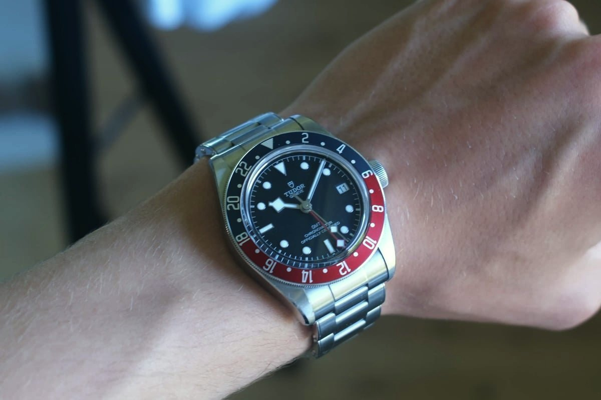
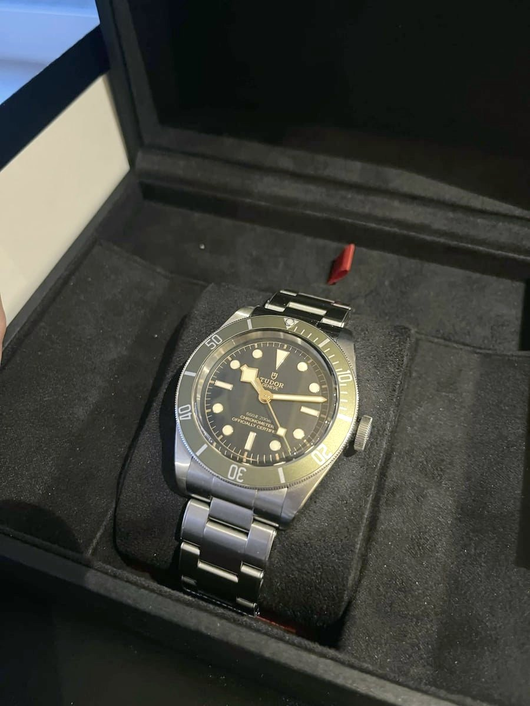
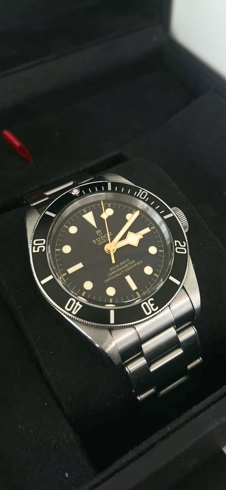

Skriv til os
Interesseret i dette ur?
Spørg om hvad som helst, eller aftal en besigtigelse. Du hører personligt svar, som regel samme dag.
Mere fra All in Time
Du synes måske også om

Seamaster 300M Co-Axial "Casino Royale"
DKK 24.900
En ikonisk Omega Seamaster med blå bølgeskive, matchende dykkerkrans og Co-Axial automatikværk. Modellen er særligt kendt som “Casino Royale” Seamasteren, da den blev båret af Daniel Craig som James Bond i Casino Royale (2006). Med 300 meters vandtæthed og et tidløst sporty design er den en eftertragtet moderne Bond-klassiker.

Black Bay GMT
Tudor's travel watch: a red and blue bezel, a fourth hand for a second time zone and a riveted-style steel bracelet.

Black Bay, green
Black dial with gilt details, a coloured dive bezel and Tudor's snowflake hands.

Black Bay
Black dial and bezel, gilt markers and snowflake hands. The look of Tudor's 1950s divers, made today.